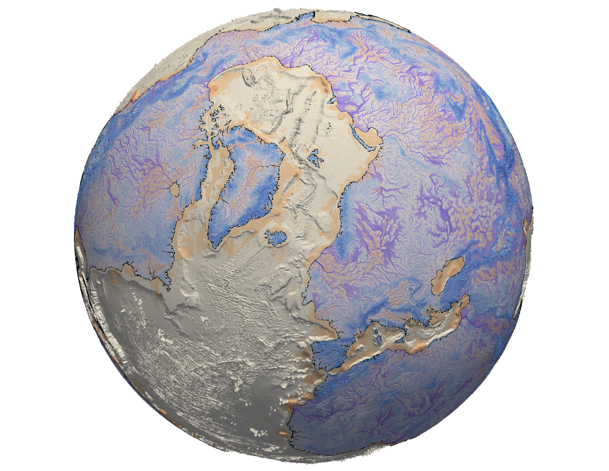

eSCAPE’s documentation¶
{kind=link}
eSCAPE is a parallel TIN-based landscape evolution model, built to simulate topography dynamic at various space and time scales. The model accounts for hillslope processes (soil creep using linear diffusion), fluvial incision (stream power law), spatially and temporally varying tectonics (vertical displacements) and climatic forces (temporal and spatial precipitation changes and/or sea-level fluctuations).
Usage documentation and tutorials can be found on the eSCAPE website
The current YAML input file format is documented in the input for eSCAPE
Contents¶
LandscapeEvolutionModel super class is the main entry point for eSCAPE and contains an inherited class (LandscapeEvolutionModelClass) which defines the following 3 main functions:
| Main functions | Summary |
|---|---|
| LandscapeEvolutionModel() | Instantiates eSCAPE model object and performs surface processes evolution. |
| runProcesses() | Run eSCAPE Earth surface processes. |
| destroy() | Destroy PETSc DMPlex objects and associated Petsc local/global Vectors and Matrices. |
A typical call to eSCAPE will be like this
1 2 3 4 5 6 7 8 9 10 | import eSCAPE as sim
# Reading input file
model = sim.LandscapeEvolutionModel('input_globe.yml',False,False)
# Running model
model.runProcesses()
# Cleaning model
model.destroy()
|
Members¶
-
eSCAPE.LandscapeEvolutionModel(filename, *args, **kwargs)[source]¶ Instantiates eSCAPE model object and performs surface processes evolution.
- This object contains methods for the following operations:
- initialisation of eSCAPE mesh based on input file options.
- computation of surface processes
- cleaning/destruction of PETSC objects
- Args
filename : YAML input file verbose : True/False
Output option for model main functions- showlog : True/False
- Output option for PETSC logging file
Returns: LandscapeEvolutionModel – object